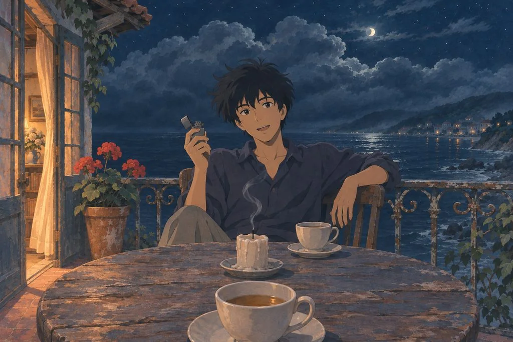
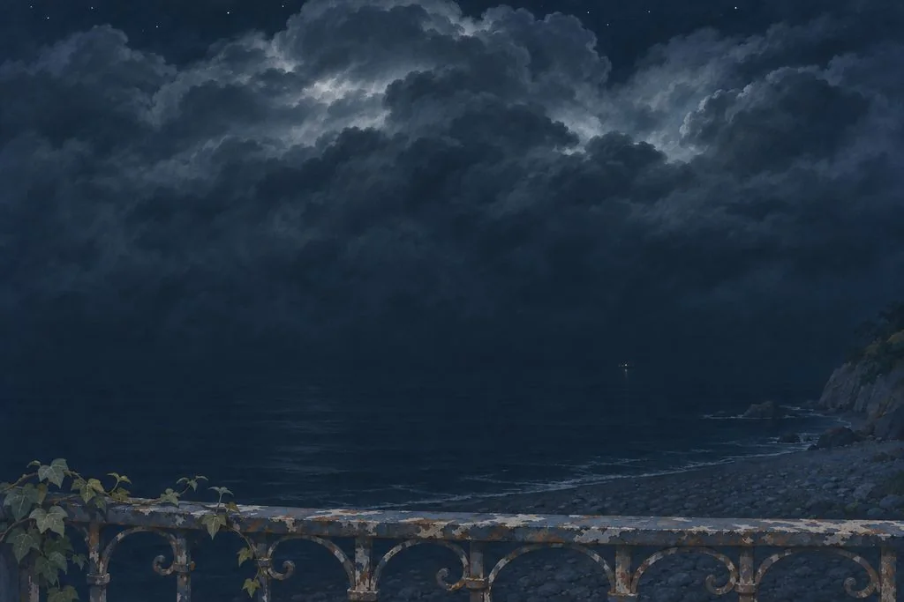
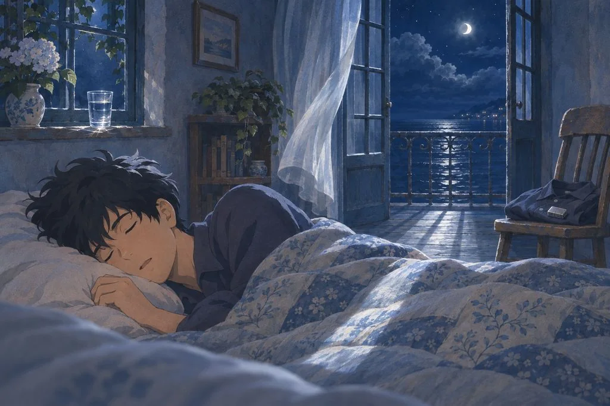
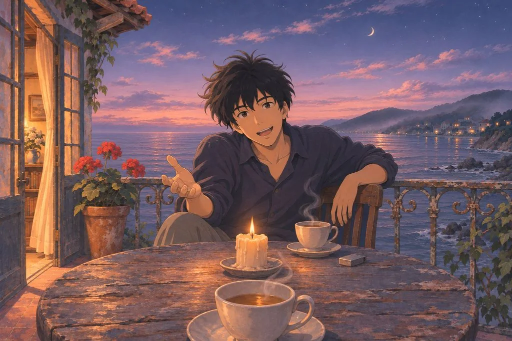

2026
Статья психолога
Доверие
Почему страх перед близостью почти никогда не связан с тем, кто сидит напротив, — и что меняется в ту ночь, когда ты наконец разрешаешь другому не справиться
Влажный морской воздух гасит свечу на столике, в чашках давно остыл чай. Мы сидим на балконе в одну из тех ночей, когда все шрамы уже выучены наизусть и целую фразу легко заменяет полувздох.
Он вертит в пальцах зажигалку и спокойно рассказывает о наших общих планах. Я киваю в такт его голосу, но внутри разливается знакомый до тошноты страх — страх разжать пальцы и отпустить вожжи. В эту минуту довериться кажется сделкой безумца: добровольно лечь на операционный стол, даже не заглянув в диплом хирурга.
Пока он говорит, я проваливаюсь в память — в тысячу и одну прошлую ночь, когда я уже проделываю этот фокус. Я вынимаю из груди всё самое незащищённое: свой хрупкий покой, усталость, разобранность, ту часть себя, которой нечем прикрыться. Выкладываю это перед другим человеком и говорю: «Держи. Теперь это у тебя».
А потом, когда чужие руки неизбежно дрожат, я рыдаю в темноте под «Знаешь ли ты?» МакSим. Строчка «Сердце его теперь в твоих руках — не потеряй его и не сломай» долго казалась мне золотым стандартом любви. Лишь спустя годы мне удаётся разглядеть, чем она была на самом деле: инструкцией, по которой я заранее вжимаю голову в плечи и жду удара.
Пожалуй, это наша общая, почти культурная болезнь. Мы вручаем другому своё сердце — и в ту же секунду замираем рядом с занесённым скальпелем, готовые при малейшем неловком движении полоснуть первыми: отсечь, обесценить, хлопнуть дверью раньше, чем нам сделают больно. Мы выкручиваем близким руки, требуя стопроцентной страховки там, где её в принципе не выпускают.

За береговой линией висит тяжёлый кучевой блэкаут — небо и море слились в глухую, непроглядную стену. Я смотрю в эту темноту, пока меня медленно, сантиметр за сантиметром, затягивает липкая тревога. А вдруг он не поймёт? Вдруг усмехнётся? Вдруг завтра утром я проснусь с горьким сожалением о каждом слове, сказанном этой ночью?
Я не отмахиваюсь от неё. И когда эта тревога проглатывает меня целиком, на самом её дне вдруг обнаруживается звенящая, чистая тишина.
В этой тишине становится невыносимо ясно: все эти годы я душу не того, кто сидит напротив. Я душу себя.
Я боюсь доверять вовсе не потому, что люди бывают небрежными, рассеянными или жестокими. Страх растёт из куда более тихого и болезненного убеждения: в глубине души я считаю себя слишком хрупким человеком, чтобы пережить чужую ошибку. Я требую от другого безупречной гарантии только потому, что не верю в собственную способность подняться, если упаду.

Позже, в ту же ночь, я лежу без сна и смотрю на него спящего. В полумраке с него будто сходит вся невозможная должность, на которую я тайком его назначаю. Передо мной дышит обычный живой человек — уязвимый, эмоциональный, ограниченный, несовершенный. И в том, что я вижу, удивительно много тепла.
Тогда я заключаю с собой тихую сделку.
«Ты можешь не справиться, — мысленно говорю я ему. — Ты можешь не удержать то, что я тебе отдаю. Я больше не буду стоять над тобой с плетью».
Если ты уронишь — я наклонюсь и подниму. Если мне станет больно — я это проживу. Я себя не брошу.
Внутри что-то беззвучно щёлкает, и тугая струна, державшая меня в напряжении долгие годы, наконец лопается. Я закрываю глаза и впервые за очень долгое время по-настоящему засыпаю. Без дежурства на вышке, без привычной готовности вскочить при первом шорохе — просто засыпаю.
Доверие оказалось совсем не клятвой другого человека в том, что он никогда не причинит мне боли. Оно оказалось моим собственным, свободным выбором — и тихой уверенностью в том, что я выстою, каким бы ни оказался исход.

балкон
На следующий вечер мы снова выходим на тот же балкон. Ветер всё так же тянет сыростью со стороны моря, и разговор снова сворачивает к нашему будущему. Только на этот раз я не прячусь за остывшей чашкой — я шагаю в эти планы рядом с ним.
Потому что впервые в жизни я вижу в себе не человека, который упал тысячу раз. Я вижу того, кто тысячу и один раз поднялся — и всё ещё стоит на ногах.